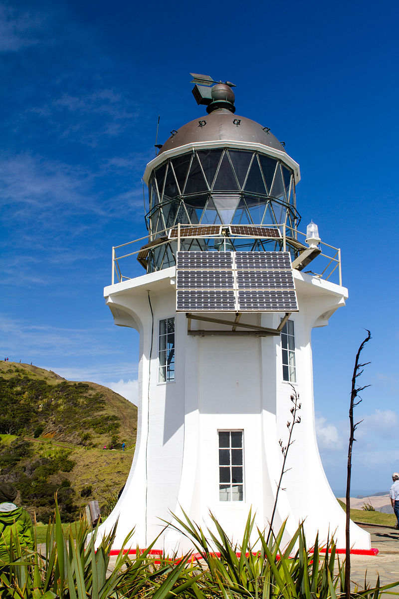
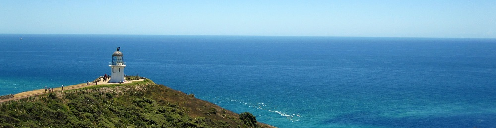

Cape Reinga Lighthouse
The lighthouse at Cape Reinga was built in 1941 and first lit during May of that year, replacing a lighthouse located on nearby Motuopao Island, which had been built 1879. In 1987, the lighthouse was fully automated and the lighthouse keepers were withdrawn. The previous 1000 watt light and its revolving Fresnel lens have since been replaced with a tiny 50 watt flashing beacon, lodged in their place in the huge lantern.
Cape Reinga, sometimes spelled Rе̄inga, and officially Cape Reinga / Te Rerenga Wairua, is the northwesternmost tip of the Aupouri Peninsula, at the northern end of the North Island of New Zealand.
